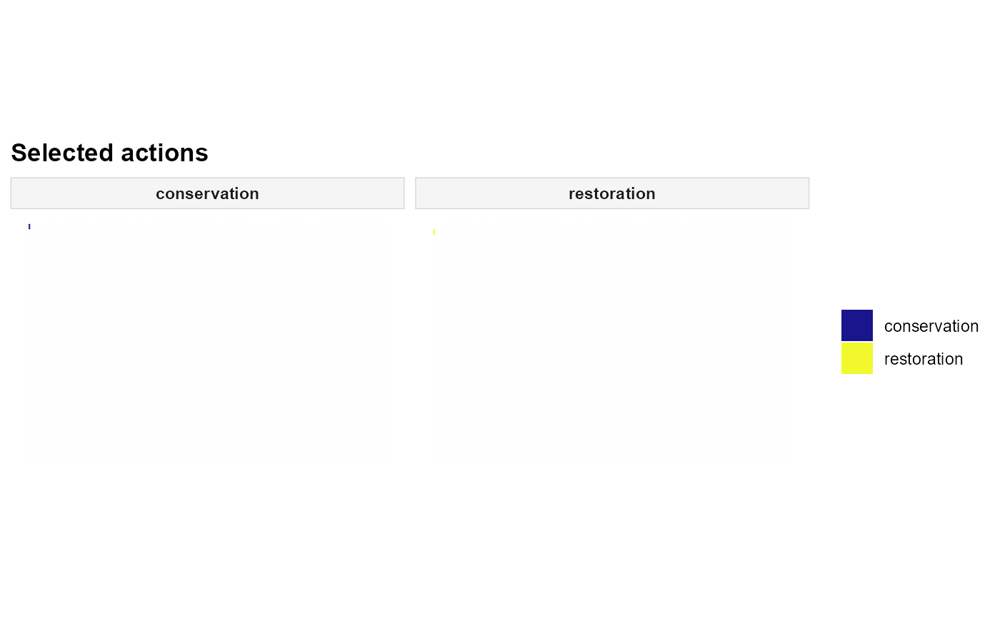

Plot the spatial distribution of selected actions from a
solutionset-class object returned by solve.
This function maps the selected planning unit–action pairs returned by
get_actions onto the planning-unit geometry stored in the associated
Problem object.
Usage
plot_spatial_actions(
x,
solutions = NULL,
actions = NULL,
layout = NULL,
max_facets = 4L,
nrow = NULL,
ncol = NULL,
...,
base_alpha = 0.08,
selected_alpha = 0.95,
base_fill = "grey95",
base_color = NA,
selected_color = NA,
draw_borders = FALSE,
show_base = TRUE,
fill_values = NULL,
fill_na = "grey80",
use_viridis = TRUE
)Arguments
- x
A
solutionset-classobject returned bysolve.- solutions
Optional integer vector of solution ids. If
NULL, the first available solution is plotted by default.- actions
Optional action subset to display. Entries may match action ids or action-set labels.
- layout
Character string controlling the layout. Must be one of
"single"or"facet". IfNULL, the default is"single".- max_facets
Maximum number of action facets shown when
actionsisNULLand faceting would otherwise create many panels.- nrow, ncol
Optional numbers of rows and columns used to arrange facets.
- ...
Reserved for future extensions.
- base_alpha
Numeric value in \([0,1]\) giving the alpha of the base planning-unit layer.
- selected_alpha
Numeric value in \([0,1]\) giving the alpha of the highlighted action layer.
- base_fill
Fill colour for the base planning-unit layer.
- base_color
Border colour for the base planning-unit layer.
- selected_color
Border colour for highlighted layers.
- draw_borders
Logical. If
FALSE, borders are not drawn.- show_base
Logical. If
TRUE, draw the base planning-unit layer underneath the highlighted output.- fill_values
Optional named vector of colours for discrete action maps.
- fill_na
Fill colour for missing values.
- use_viridis
Logical. If
TRUEand the viridis package is available, use viridis discrete scales.
Details
Let \(x_{ia} \in \{0,1\}\) denote whether action \(a\) is selected in
planning unit \(i\). This function plots the selected
(pu, action) pairs in geographic space.
If layout = "facet" and only one run is plotted, one panel is drawn
per action.
If layout = "single", all selected actions are drawn in a single map
using discrete fills. If more than one action is selected in the same
planning unit, the action labels are collapsed using "+".
When plotting multiple runs, only layout = "single" is supported.
Planning-unit geometry must be available in the associated problem object.
Examples
if (
requireNamespace("sf", quietly = TRUE) &&
requireNamespace("ggplot2", quietly = TRUE) &&
requireNamespace("rcbc", quietly = TRUE)
) {
# Load a complete simulated planning problem.
example_data <- load_sim_multiaction()
problem <- create_problem(
pu = example_data$planning_units,
features = example_data$features,
dist_features = example_data$dist_features,
cost = "cost"
) |>
add_actions(
example_data$actions,
cost = example_data$action_costs
) |>
add_effects(
example_data$effects,
effect_type = "delta"
) |>
add_constraint_targets_relative(0.05) |>
add_objective_min_cost(alias = "cost", include_pu_cost = FALSE) |>
add_objective_max_benefit(alias = "benefit") |>
set_method_weighted_sum(
aliases = c("cost", "benefit"),
runs = set_runs_grid(n = 3),
normalize_weights = TRUE
) |>
set_solver_cbc(verbose = FALSE)
solutions <- solve(problem)
plot_spatial_actions(
solutions,
layout = "single"
)
}
